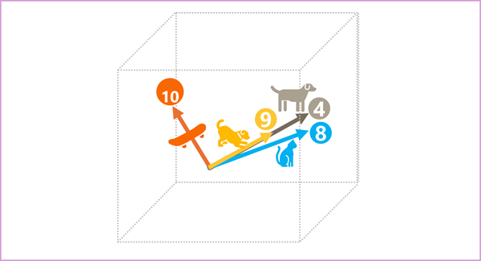
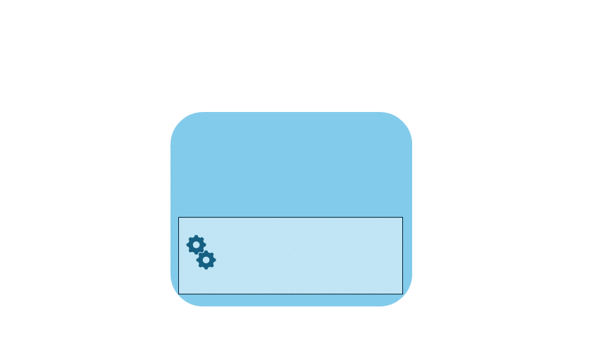

Generative AI applications are powered by language models, which are a specialized type of machine learning model that you can use to perform natural language processing (NLP) tasks, including:
- Determining sentiment or otherwise classifying natural language text.
- Summarizing text.
- Comparing multiple text sources for semantic similarity.
- Generating new natural language.
While the mathematical principles behind these language models can be complex, a basic understanding of the architecture used to implement them can help you gain a conceptual understanding of how they work.
Transformer models
Machine learning models for natural language processing have evolved over many years. Today’s cutting-edge large language models are based on the transformer architecture, which builds on and extends some techniques that have been proven successful in modeling vocabularies to support NLP tasks - and in particular in generating language. Transformer models are trained with large volumes of text, enabling them to represent the semantic relationships between words and use those relationships to determine probable sequences of text that make sense. Transformer models with a large enough vocabulary are capable of generating language responses that are tough to distinguish from human responses.
Transformer model architecture consists of two components, or blocks:
- An encoder block that creates semantic representations of the training vocabulary.
- A decoder block that generates new language sequences.

- The model is trained with a large volume of natural language text, often sourced from the internet or other public sources of text.
- The sequences of text are broken down into tokens (for example, individual words) and the encoder block processes these token sequences using a technique called attention to determine relationships between tokens (for example, which tokens influence the presence of other tokens in a sequence, different tokens that are commonly used in the same context, and so on.)
- The output from the encoder is a collection of vectors (multi-valued numeric arrays) in which each element of the vector represents a semantic attribute of the tokens. These vectors are referred to as embeddings.
- The decoder block works on a new sequence of text tokens and uses the embeddings generated by the encoder to generate an appropriate natural language output.
- For example, given an input sequence like
"When my dog was", the model can use the attention technique to analyze the input tokens and the semantic attributes encoded in the embeddings to predict an appropriate completion of the sentence, such as"a puppy".
In practice, the specific implementations of the architecture vary – for example, the Bidirectional Encoder Representations from Transformers (BERT) model developed by Google to support their search engine uses only the encoder block, while the Generative Pretrained Transformer (GPT) model developed by OpenAI uses only the decoder block.
While a complete explanation of every aspect of transformer models is beyond the scope of this module, an explanation of some of the key elements in a transformer can help you get a sense for how they support generative AI.
Tokenization
The first step in training a transformer model is to decompose the training text into tokens - in other words, identify each unique text value. For the sake of simplicity, you can think of each distinct word in the training text as a token (though in reality, tokens can be generated for partial words, or combinations of words and punctuation).
For example, consider the following sentence:
I heard a dog bark loudly at a cat
To tokenize this text, you can identify each discrete word and assign token IDs to them. For example:
- I (1)
- heard (2)
- a (3)
- dog (4)
- bark (5)
- loudly (6)
- at (7)
- ("a" is already tokenized as 3)
- cat (8)
The sentence can now be represented with the tokens: {1 2 3 4 5 6 7 3 8}. Similarly, the sentence "I heard a cat" could be represented as {1 2 3 8}.
As you continue to train the model, each new token in the training text is added to the vocabulary with appropriate token IDs:
- meow (9)
- skateboard (10)
- *and so on...*
With a sufficiently large set of training text, a vocabulary of many thousands of tokens could be compiled.
Embeddings
While it may be convenient to represent tokens as simple IDs - essentially creating an index for all the words in the vocabulary, they don’t tell us anything about the meaning of the words, or the relationships between them. To create a vocabulary that encapsulates semantic relationships between the tokens, we define contextual vectors, known as embeddings, for them. Vectors are multi-valued numeric representations of information, for example [10, 3, 1] in which each numeric element represents a particular attribute of the information. For language tokens, each element of a token’s vector represents some semantic attribute of the token. The specific categories for the elements of the vectors in a language model are determined during training based on how commonly words are used together or in similar contexts.
Vectors represent lines in multidimensional space, describing direction and distance along multiple axes (you can impress your mathematician friends by calling these amplitude and magnitude). It can be useful to think of the elements in an embedding vector for a token as representing steps along a path in multidimensional space. For example, a vector with three elements represents a path in 3-dimensional space in which the element values indicate the units traveled forward/back, left/right, and up/down. Overall, the vector describes the direction and distance of the path from origin to end.
The elements of the tokens in the embeddings space each represent some semantic attribute of the token, so that semantically similar tokens should result in vectors that have a similar orientation – in other words they point in the same direction. A technique called cosine similarity is used to determine if two vectors have similar directions (regardless of distance), and therefore represent semantically linked words. As a simple example, suppose the embeddings for our tokens consist of vectors with three elements, for example:
- 4 ("dog"): [10,3,2]
- 8 ("cat"): [10,3,1]
- 9 ("puppy"): [5,2,1]
- 10 ("skateboard"): [-3,3,2]
We can plot these vectors in three-dimensional space, like this:

The embedding vectors for "dog" and "puppy" describe a path along an almost identical direction, which is also fairly similar to the direction for "cat". The embedding vector for "skateboard" however describes journey in a very different direction.
Note
The previous example shows a simple example model in which each embedding has only three dimensions. Real language models have many more dimensions.
There are multiple ways you can calculate appropriate embeddings for a given set of tokens, including language modeling algorithms like Word2Vec or the encoder block in a transformer model.
Attention
The encoder and decoder blocks in a transformer model include multiple layers that form the neural network for the model. We don’t need to go into the details of all these layers, but it’s useful to consider one of the types of layers that is used in both blocks: attention layers. Attention is a technique used to examine a sequence of text tokens and try to quantify the strength of the relationships between them. In particular, self-attention involves considering how other tokens around one particular token influence that token’s meaning.
In an encoder block, each token is carefully examined in context, and an appropriate encoding is determined for its vector embedding. The vector values are based on the relationship between the token and other tokens with which it frequently appears. This contextualized approach means that the same word might have multiple embeddings depending on the context in which it’s used - for example "the bark of a tree" means something different to "I heard a dog bark".
In a decoder block, attention layers are used to predict the next token in a sequence. For each token generated, the model has an attention layer that takes into account the sequence of tokens up to that point. The model considers which of the tokens are the most influential when considering what the next token should be. For example, given the sequence "I heard a dog", the attention layer might assign greater weight to the tokens "heard" and "dog" when considering the next word in the sequence:
I heard a dog {bark}
Remember that the attention layer is working with numeric vector representations of the tokens, not the actual text. In a decoder, the process starts with a sequence of token embeddings representing the text to be completed. The first thing that happens is that another positional encoding layer adds a value to each embedding to indicate its position in the sequence:
- [**1**,5,6,2] (I)
- [**2**,9,3,1] (heard)
- [**3**,1,1,2] (a)
- [**4**,10,3,2] (dog)
During training, the goal is to predict the vector for the final token in the sequence based on the preceding tokens. The attention layer assigns a numeric weight to each token in the sequence so far. It uses that value to perform a calculation on the weighted vectors that produces an attention score that can be used to calculate a possible vector for the next token. In practice, a technique called multi-head attention uses different elements of the embeddings to calculate multiple attention scores. A neural network is then used to evaluate all possible tokens to determine the most probable token with which to continue the sequence. The process continues iteratively for each token in the sequence, with the output sequence so far being used regressively as the input for the next iteration – essentially building the output one token at a time.
The following animation shows a simplified representation of how this works – in reality, the calculations performed by the attention layer are more complex; but the principles can be simplified as shown:

- A sequence of token embeddings is fed into the attention layer. Each token is represented as a vector of numeric values.
- The goal in a decoder is to predict the next token in the sequence, which will also be a vector that aligns to an embedding in the model’s vocabulary.
- The attention layer evaluates the sequence so far and assigns weights to each token to represent their relative influence on the next token.
- The weights can be used to compute a new vector for the next token with an attention score. Multi-head attention uses different elements in the embeddings to calculate multiple alternative tokens.
- A fully connected neural network uses the scores in the calculated vectors to predict the most probable token from the entire vocabulary.
- The predicted output is appended to the sequence so far, which is used as the input for the next iteration.
During training, the actual sequence of tokens is known – we just mask the ones that come later in the sequence than the token position currently being considered. As in any neural network, the predicted value for the token vector is compared to the actual value of the next vector in the sequence, and the loss is calculated. The weights are then incrementally adjusted to reduce the loss and improve the model. When used for inferencing (predicting a new sequence of tokens), the trained attention layer applies weights that predict the most probable token in the model’s vocabulary that is semantically aligned to the sequence so far.
What all of this means, is that a transformer model such as GPT-4 (the model behind ChatGPT and Bing) is designed to take in a text input (called a prompt) and generate a syntactically correct output (called a completion). In effect, the “magic” of the model is that it has the ability to string a coherent sentence together. This ability doesn’t imply any “knowledge” or “intelligence” on the part of the model; just a large vocabulary and the ability to generate meaningful sequences of words. What makes a large language model like GPT-4 so powerful however, is the sheer volume of data with which it has been trained (public and licensed data from the Internet) and the complexity of the network. This enables the model to generate completions that are based on the relationships between words in the vocabulary on which the model was trained; often generating output that is indistinguishable from a human response to the same prompt.